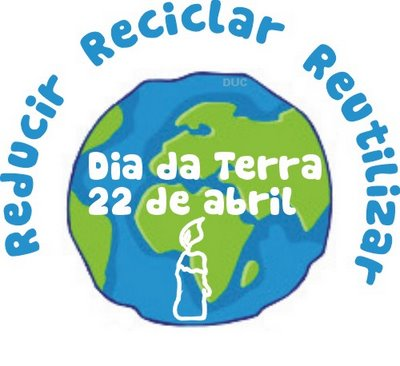
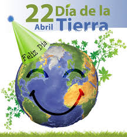
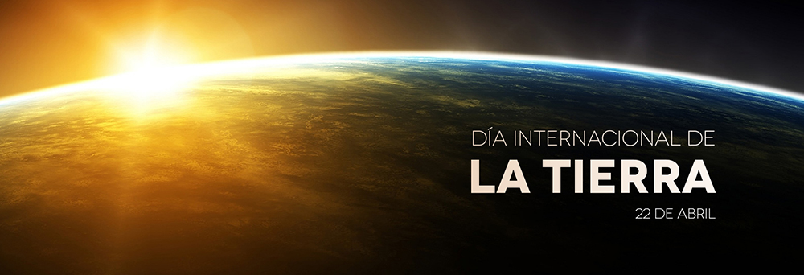

El Día de la Tierra es un día celebrado en muchos países el 22 de abril.
Su promotor, el senador estadounidense Gaylord Nelson, instauró este día para crear una conciencia común a los problemas de la superpoblación, la producción de contaminación, la conservación de la biodiversidad y otras preocupaciones ambientales para proteger la Tierra.
Es un día para rendir homenaje a nuestro planeta y reconocer a la Tierra como nuestro hogar y nuestra madre, así como lo han expresado distintas culturas a lo largo de la historia, demostrando la interdependencia entre sus ecosistemas y los seres vivos que la habitamos.
En 1968, Morton Hilbert y el U.S. Public Health Service (Servicio de Salud Pública de E.E.U.U.), organizaron el Simposio de Ecología Humana, se realiza una conferencia por los nombrados anteriormente para una asamblea o conferencia medioambiental para que estudiantes escucharan a científicos hablar sobre los efectos del deterioro ambiental en la salud humana.
Este fue el primero de varios eventos realizados en campus universitarios por todo Estados Unidos. Así mismo, Ralph Nader empezó a hablar acerca de la importancia de la ecología en 1970.
En 1972 se celebró la primera conferencia internacional sobre el medio ambiente. La Cumbre de la Tierra de Estocolmo, cuyo objetivo fue sensibilizar a los líderes mundiales sobre la magnitud de los problemas ambientales.Este fue el primer antecedente del Día de la Tierra. Durante los siguientes dos años, Hilbert y sus estudiantes trabajaron para planear el primer Día de la Tierra.3 Surgieron otros esfuerzos como Survival Project (Proyecto para la Supervivencia), uno de los primeros eventos educacionales de conciencia ambiental, que fue llevado a cabo en la Universidad Northwestern el 23 de enero de 1970.
La primera manifestación tuvo lugar el 22 de abril de 1970, promovida por el senador y activista ambiental Gaylord Nelson, para la creación de una agencia ambiental. En esta convocatoria participaron dos mil universidades, diez mil escuelas (primarias y secundarias) y centenares de comunidades. La presión social tuvo sus logros y el gobierno de los Estados Unidos creó la Environmental Protection Agency (Agencia de Protección Ambiental) y una serie de leyes destinadas a la protección del medio ambiente.
Nosotros mismos, y al margen de sumarnos a los actos que se organizan en todos los países, podemos celebrar El día de la Tierra de una forma ecológica y de manera particular. ¿Qué podemos hacer? Pues podemos realizar pequeños actos que en conjunto que en realidad conformen grandes actos. Aquí te dejamos algunas recomendaciones de como celebrarlo.
Recomendar a un amigo que cambie de las lámparas incandescentes a las lámparas de bajo consumo.
Tienes que hablar a la gente sobre los beneficios de las energías renovables, y lo malas que son las energías fósiles para nuestro mundo.
Aconsejar a todos que por un día, desconecten su conexión a internet y que apenas gasten electricidad.
Otra idea es plantar un árbol. E invitar a nuestros amigos a hacer lo mismo.
Enseñar a los niños a apreciar y a cuidar a la naturaleza. Y sobre la importancia de la biodiversidad.
Juega con los niños en la calle. Aprovecha este día para enseñarles por ejemplo la importancia de cuidar del medio ambiente pero no desde casa, o desde un ordenador
Decir a esa persona que ha arrojado basura en la calle, que la levante y la tire en el contenedor de la basura.
Reciclar, y alentar a vuestros amigos también a que lo hagan. Que sepan qué es biodegradable y qué no lo es.
No utilices bolsas de plástico, y si se tienen que usar, lo mejor es reciclarlas. Puedes utilizar las que nos dan en los comercios como bolsas de residuos. Se pueden difundir estas ideas entre vuestros amigos. Miles de animales os lo van a agradecer.
Se puede difundir entre quienes no lo saben, qué es el calentamiento global, y qué asociación tiene con el cambio climático.
Más que nada es para crear conciencia sobre nuestro planeta, que estamos haciendo con el, y que debemos hacer para mejorar
Este 22 de abril se conmemoran 50 años del Día de la Tierra, fecha en la que países del mundo rinden tributo a la Pachamama y elevan un llamado de reflexión a la humanidad de cara a los problemas ambientales que azotan al planeta.
Esta festividad se remonta a 1970, cuando 2.000 universidades, 10.000 escuelas y centenares de comunidades estadounidenses salieron a las calles, como parte de una manifestación multitudinaria para exigir la creación de una agencia para la preservación del medio ambiente.
Este año el día está dedicado a los árboles, por ello el objetivo para conmemorar la fecha será la siembra de 7,8 millones de especies en los próximos cinco años, refiere el portal Web de la Organización de las Naciones Unidas (ONU)
La contaminación hídrica o contaminación del agua es una modificación generalmente, provocada por el hombre, haciéndola impropia o peligrosa para el consumo humano, la industria, la agricultura, la pesca y las actividades recreativas, así como para los animales y la vida natural.
La contaminación del suelo consiste en la acumulación de sustancias a unos niveles tales que repercuten negativamente en el comportamiento de los suelos. Las sustancias, a esos niveles de concentración, se vuelven tóxicas para los organismos del suelo.Presencia de desechos en el suelo, a causa de actividades agrícolas y ganaderas.
La contaminación sonora se denomina a cualquier sonido que produzca molestar o que resulte excesivo en una determinada zona. Las personas que viven en las grandes ciudades sufren a menudo el ruido provocado por el tráfico de los coches, las bocinas de los autobuses y el paso de los trenes.
Se denomina contaminación radiactiva o contaminación nuclear a la presencia no deseada de sustancias radiactivas en el entorno. Ésta contaminación puede proceder de radioisótopos naturales o artificiales.
El medio más habitual donde se produce es en el agua, ya que el aire se disipa más fácilmente. Pero también es posible, por ejemplo, cuando se concentra una gran cantidad de aparatos de aire acondicionado y estos expulsan el calor hacia la calle.

El término Calentamiento Global se refiere al aumento gradual de las temperaturas de la atmósfera y océanos de la Tierra que se ha detectado en la actualidad, además de su continuo aumento que se proyecta a futuro.
Nadie pone en duda el aumento de la temperatura global, lo que todavía genera controversia es la fuente y razón de este aumento de la temperatura. Aún así, la mayor parte de la comunidad científica asegura que hay más que un 90% de certeza que el aumento se debe al aumento de las concentraciones de gases de efecto invernadero por las actividades humanas que incluyen deforestación y la quema de combustibles fósiles como el petróleo y el carbón. Estas conclusiones son avaladas por las academias de ciencia de la mayoría de los países industrializados.

Si se revisa el gráfico de las temperaturas de la superficie terrestre de los últimos 100 años, se observa un aumento de aproximadamente 0.8ºC, y que la mayor parte de este aumento ha sido en los últimos 30 años.
Mi comunidad es la Colonia Altavista donde se presentan varios tipos de contaminación, gracias que las personas ignorantes no toman en cuenta.
Uno de los mayores problemas es la basura en la calle, los excremento de los animalitos, la contaminación sonora, la contamianción del agua, gracias a que la basura tapa el drenaje.
Al igual que la contaminación sonora, que los vecinos ponen toda la musica a todo el volumen, ya no hay respeto hacia otras casas.
Para poder evitarlo, seria que crearamos una campaña para que los hagamos tener cociencia sobre su planeta, enseñar lo que esta mal y todo así.